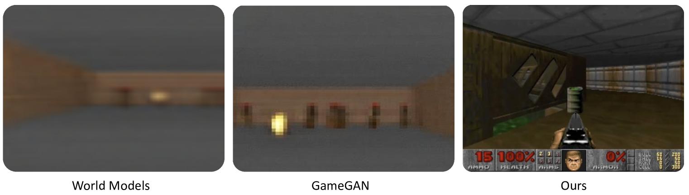
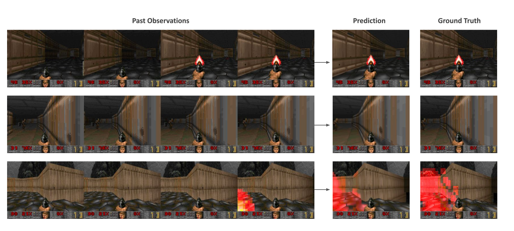
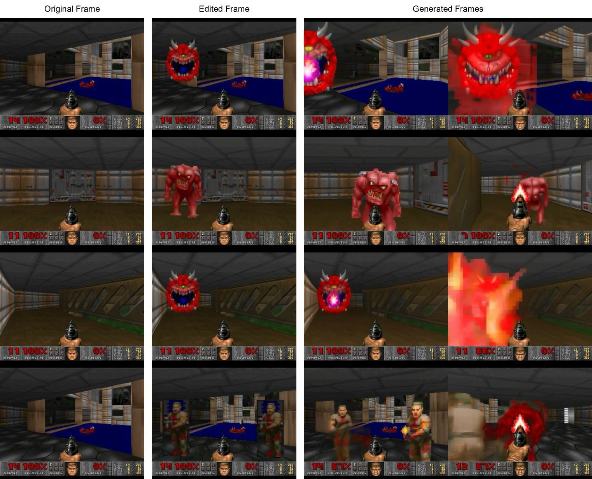
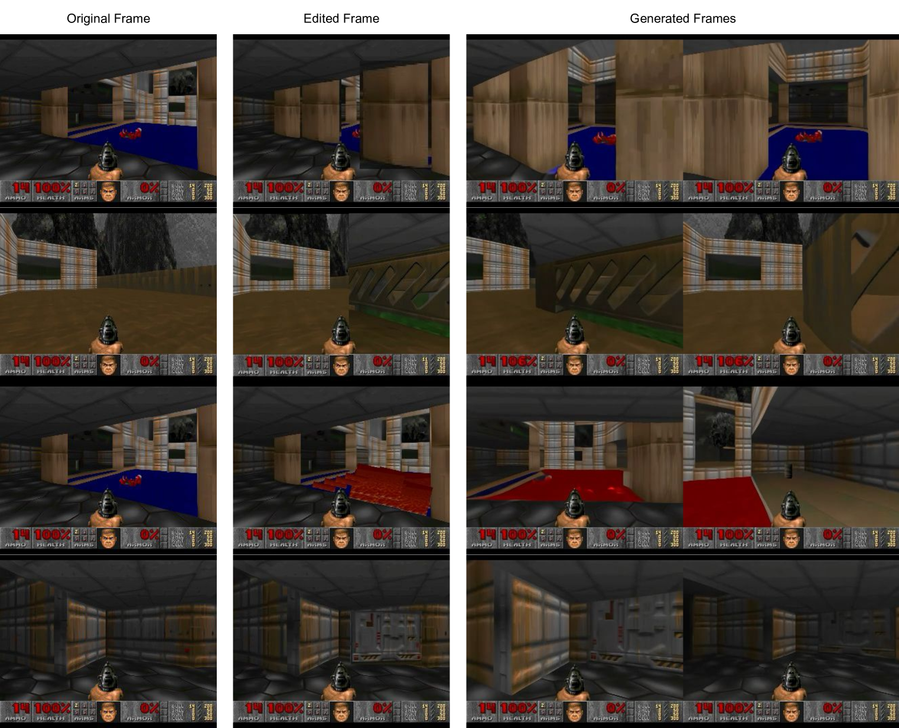

Diffusion Models Are Real-Time Game Engines
原论文摘要 · English Abstract
We present GameNGen, the first game engine powered entirely by a neural model that also enables real-time interaction with a complex environment over long trajectories at high quality. When trained on the classic game DOOM, GameNGen extracts gameplay and uses it to generate a playable environment that can interactively simulate new trajectories. GameNGen runs at 20 frames per second on a single TPU and remains stable over extended multi-minute play sessions. Next frame prediction achieves a PSNR of 29.4, comparable to lossy JPEG compression. Human raters are only slightly better than random chance at distinguishing short clips of the game from clips of the simulation, even after 5 minutes of auto-regressive generation. GameNGen is trained in two phases: (1) an RL-agent learns to play the game and the training sessions are recorded, and (2) a diffusion model is trained to produce the next frame, conditioned on the sequence of past frames and actions. Conditioning augmentations help ensure stable auto-regressive generation over long trajectories, and decoder fine-tuning improves the fidelity of visual details and text.
PPO 智能体先学会玩 DOOM
第一阶段：PPO 智能体在 ViZDoom 里从随机乱按练到熟练通关，整个训练过程的轨迹全部记入数据集 $\mathcal{T}_{agent}$
游戏引擎被定义为条件分布
给定过去的观测 $o_{
动作嵌入替代文本条件
底座 Stable Diffusion v1.4 的文本条件被移除，每个离散动作学一个嵌入 $A_{emb}$ 替换文本 token；历史帧经编码器 $\phi$ 沿通道拼到加噪潜变量后
噪声增广稳住自回归
训练时给条件帧加噪，让模型学会在带噪历史下预测，推理时逐帧自回归不再漂移发散
4 步 DDIM 采样、20 FPS 实时出帧
单块 TPU 上 4 步去噪、U-Net 单步 10 毫秒，真人玩家可实时按键游玩

问题与动机
电子游戏本质上是一个手工编写的循环：读入玩家按键，更新游戏状态，再把状态渲染成像素。这个循环每秒跑几十次，就制造出了一个可交互虚拟世界的幻觉。从 1993 年的 DOOM 开始，这个范式从未改变——无论游戏跑在厨房电器、跑步机还是 Minecraft 里，变的只是硬件，游戏逻辑始终是一行行人写的规则。
但视频生成模型的崛起提出了一个挑衅性的问题：如果扩散模型能凭一段文字生成以假乱真的视频，它能不能直接“扮演”整个游戏引擎？论文开宗明义地指出，交互式世界模拟不等于超快速视频生成。视频生成的条件在生成前就全部给定，而游戏的动作流是边生成边到达的：模型必须在不知道玩家下一步按什么键的情况下，先把当前帧交出去。这种“在线、逐帧、自回归”的约束，打破了标准扩散架构的基本假设——自回归采样天生不稳定，误差会累积、发散。
此前的尝试各有短板：Ha & Schmidhuber 的 World Models 只能模拟低分辨率的 ViZDoom 且画质粗糙；GameGAN 用 LSTM 加对抗训练，复杂度和稳定性都有限；Genie 的无监督可玩视频生成则不以真实动作为条件。于是论文把问题收敛成一句可验证的提问：一个神经模型能不能在实时条件下，以高画质模拟一个复杂游戏？GameNGen 的回答是肯定的，而它的论证方式不是空谈可能性，是直接把 DOOM 跑起来给人玩。
- 游戏循环 = 按键输入 → 状态更新 → 渲染像素，传统上全靠手写规则
- 交互模拟区别于视频生成：动作流边生成边到达，必须自回归逐帧生成
- 自回归采样会累积误差、导致画质发散，是此前方法共同的瓶颈
- 先前工作在复杂度、速度、长期稳定性或画质上各有短板
核心思想
GameNGen 把“游戏引擎”重新定义为一个模拟分布：给定过去的观测 $o_{<n}$ 与动作 $a_{\le n}$，采样出下一帧观测 $o_n$，即学习 $q(o_n \mid o_{<n}, a_{\le n})$。这个定义把游戏的状态更新与渲染压缩成了一个条件生成问题——模型不需要显式维护血量、弹药、敌人位置等内部状态，只要历史帧里藏着这些信息，它就能从像素中把状态“读”出来并延续下去。
实现这个定义分两个阶段。第一阶段训练一个 PPO 智能体学会玩 DOOM，并把智能体整个训练过程的轨迹（从随机乱按到熟练通关）全部记录下来，构成数据集 $\mathcal{T}_{agent}$；第二阶段在一个预训练的 Stable Diffusion v1.4 底座上微调扩散模型，让它以历史帧与历史动作为条件预测下一帧。训练永远用教师强制——条件帧全部取自真实轨迹，这样训练稳定且可并行；推理则纯自回归——条件帧全部取自模型自己的历史输出，玩家按键实时接入。
支撑这条路线的有三个关键技术，论文称之为三大贡献：用 RL 智能体规模化采集训练数据；用噪声增广让自回归生成长期稳定；用解码器微调保住视觉细节与文字。而 20 FPS 这个工程指标反过来决定了推理设计：单步 U-Net 10 毫秒、编解码 10 毫秒，4 步 DDIM 正好 50 毫秒一帧——方法与工程预算是在同一张桌子上谈成的。
- 游戏引擎被重定义为模拟分布 $q(o_n \mid o_{<n}, a_{\le n})$：由历史帧与动作采样下一帧
- 两阶段：PPO 智能体采数据 → 扩散模型学下一帧预测
- 训练用教师强制、推理用自回归，两者分布不同是漂移的根源
- 三大关键技术：RL 采数据、噪声增广、解码器微调，20 FPS 倒推 4 步采样
模型结构与关键机制
模型的底座是 Stable Diffusion v1.4，但改造得相当彻底。文本条件被整个移除：动作条件的做法是为每个离散动作学一个嵌入 $A_{emb}$，把动作序列编码成 token，直接替换掉原来交叉注意力里的文本输入；观测条件的做法是把历史帧用自编码器 $\phi$ 编进潜空间，再沿通道维拼到加噪潜变量后面。论文也试过用交叉注意力来条件化历史帧，但没有带来可观测的提升，于是保留了更简单的拼接方案。上下文长度固定为 64 帧与 64 个动作，即模型做决策时能看到过去约 3 秒的历史。
训练目标采用速度参数化的扩散损失：
$$\mathcal{L}=\mathbb{E}_{t,\epsilon,T}\left[\|v(\epsilon,x_{0},t)-v_{\theta^{\prime}}(x_{t},t,\{\phi(o_{i<n})\},\{A_{emb}(a_{i<n})\})\|_{2}^{2}\right]$$
其中 $T=\{o_{i\le n}, a_{i\le n}\}$ 是从智能体轨迹数据集中采样的片段，$t \sim \mathcal{U}(0,1)$ 是均匀采样的扩散时间步，$\epsilon \sim \mathcal{N}(0,\mathbf{I})$ 是标准高斯噪声，$x_0=\phi(o_n)$ 是目标帧的潜编码，$x_t=\sqrt{\bar{\alpha}_{t}}x_{0}+\sqrt{1-\bar{\alpha}_{t}}\epsilon$ 是加噪后的潜变量，$v(\epsilon,x_{0},t)=\sqrt{\bar{\alpha}_{t}}\epsilon-\sqrt{1-\bar{\alpha}_{t}}x_{0}$ 是速度目标，$v_{\theta^{\prime}}$ 是模型 $f_{\theta}$ 的速度预测输出，$\bar{\alpha}_{t}$ 是线性噪声 schedule。直观理解：网络在给定历史帧与动作的条件下，预测“从噪声指向干净帧”的速度向量；历史帧通过 $\phi(o_{i<n})$ 进入，动作通过 $A_{emb}(a_{i<n})$ 进入，缺了哪一路条件，下一帧就会失去对应的信息来源。
两个细节决定了成败。第一是噪声增广：训练时给条件帧加不同程度的高斯噪声，噪声水平 $\alpha$ 在 0 到最大值 0.7 间均匀采样、离散成 10 个桶、每个桶学一个嵌入输入模型。这相当于在训练中人为制造“带瑕疵的条件”，逼模型学会纠正输入误差——推理时条件帧一旦出现生成瑕疵，模型会把它当作“噪声”修掉而不是放大它。图 4 的对比极为直观：不用增广时静止轨迹 20–30 步就糊成一团，用了之后全程稳定。第二是解码器微调：SD v1.4 的自编码器把 $8\times8$ 像素块压成 4 个潜通道，游戏帧的小字与 HUD 数字会被压坏；论文单独用像素 MSE 损失只训解码器，不动 U-Net，且明确指出这一步不影响自回归过程——因为自回归只在潜空间里循环，像素解码只发生在最后输出。推理时另用分类器无关引导（CFG），只对历史观测条件加权、权重取较小的 1.5，对动作条件加引导没有收益，更大的权重反而会放大自回归伪影。
- 底座 Stable Diffusion v1.4：文本条件移除，动作嵌入 $A_{emb}$ 替代文本 token
- 历史帧经编码器 $\phi$ 编码后沿通道维拼到加噪潜变量上
- 速度参数化损失，以历史帧与动作为条件预测速度向量 $v$
- 噪声增广：条件帧加噪、噪声水平 $\alpha$ 分 10 桶嵌入，最大 0.7
- 解码器单独 MSE 微调，专治 HUD 数字与小字伪影；CFG 只对观测条件、权重 1.5

训练与推理流程
第一阶段的智能体用 PPO 训练，特征网络是简单 CNN，基于 Stable Baselines 3，在 ViZDoom 环境里跑 8 个并行游戏、共 5000 万环境步，折扣因子 $\gamma=0.99$、熵系数 0.1、批大小 64、每轮 10 个 epoch、学习率 $10^{-4}$。奖励函数是全文唯一与 DOOM 强绑定的部分：被击中扣 100、死亡扣 5000、击中敌人加 300、击杀加 1000、拾取加 100、发现秘密加 500，探索新区域按 $20 \times (1 + 0.5 \times L_1)$ 计分，血量、护甲、弹药的变化各乘 10 计入。为了让智能体的行为更像人类而非抽搐的机器，每个动作会重复执行 4 帧，且人为提高重复上一动作的概率——平滑的操作轨迹对第二阶段至关重要，因为抖动的动作分布会让生成模型学到错误的动作-画面因果。
第二阶段从 Stable Diffusion 1.4 预训练权重出发，解冻全部 U-Net 参数，批大小 128、恒定学习率 $2\times10^{-5}$、Adafactor 优化器、无权重衰减、梯度裁剪 1.0，在 128 块 TPU-v5e 上数据并行训练 70 万步；为支持 CFG，上下文帧条件以 0.1 的概率随机丢弃。训练数据是从智能体全部训练与评估轨迹中随机抽出的 7000 万个样本，帧分辨率 320×240、补齐到 320×256，上下文 64 帧。解码器微调单独用 2048 的大批大小跑像素 MSE。
推理是一场精确的预算 accounting：单块 TPU-v5 上，U-Net 单步去噪 10 毫秒、自编码器编解码 10 毫秒；4 步 DDIM 采样即 40 毫秒加 10 毫秒，共 50 毫秒一帧，恰好 20 FPS。论文还试了蒸馏：用分布匹配蒸馏把模型压到单步，20 毫秒一帧可达 50 FPS，但画质略有损失，因此默认配置仍是 4 步不蒸馏。值得注意的是，4 步与 20 步以上的画质几乎无差，这在文生图扩散模型里是不可想象的——下一节的实验会给出数字。
- 智能体：PPO、ViZDoom、5000 万步、$\gamma=0.99$，奖励函数是唯一 DOOM 专属部分
- 每个动作重复 4 帧并鼓励重复上一动作，让操作轨迹更像人类
- 生成模型：批大小 128、学习率 $2\times10^{-5}$、Adafactor、128 块 TPU-v5e、70 万步、7000 万样本
- 推理：4 步 DDIM、单步 10 毫秒、共 50 毫秒一帧，恰好 20 FPS；蒸馏单步可达 50 FPS

实验与结果
在教师强制的单帧预测上，模型在 5 个关卡、2048 条留出轨迹上达到 PSNR 29.43、LPIPS 0.249，论文称 PSNR 大致相当于质量 20–30 的有损 JPEG 压缩。真正考验自回归能力的视频指标是 FVD：16 帧（0.8 秒）为 114.02，32 帧（1.6 秒）为 186.23。逐帧 PSNR 与 LPIPS 会随自回归步数逐渐恶化——这不是因为画面变糊，而是预测轨迹与真实轨迹在几步后就因微小的移动速度差异而分叉，逐帧对齐的指标天然失效；FVD 与人类评价因此更可信。
人类盲测是最有说服力的结果：10 名评分者看 130 段并排短片，1.6 秒片段正确识别真实游戏的比例是 58%，3.2 秒是 60%，仅略高于随机；而在 5–10 分钟自回归生成后的 3 秒片段上，正确率回到 50%，即完全随机水平。换句话说，不上手玩、只看几秒钟画面时，人已经分不清哪边是真 DOOM、哪边是神经网络。
消融实验回答了四个关键问题。采样步数：2 步到 64 步 PSNR 稳定在 32.2–32.6，4 步峰值 32.58，只有 1 步跌到 25.47，蒸馏可把单步拉回 31.10。上下文长度：从 1 帧增到 64 帧，PSNR 从 20.94 升到 22.36，但 4 帧之后提升就迅速饱和——模型只用 3 秒历史却记住了远超 3 秒的游戏逻辑，暗示它学的是启发式而非真记忆。噪声增广：无增广时 LPIPS 在 10–20 步后快速恶化，有增广则全程平稳，是全文最具决定性的消融。数据来源：智能体数据对随机策略数据，单帧 25.06 对 24.42、自回归 3 秒后 19.02 对 16.84，优势集中在中等难度区域。数据量：1M、5M、10M、70M 四档，越大越好，70M 在 70 万步后仍在提升；1M 模型能渲染新视角却学不会杀怪，说明游戏逻辑比画面更吃数据。
- 教师强制单帧：PSNR 29.43、LPIPS 0.249，约等于低质量 JPEG
- FVD：16 帧 114.02、32 帧 186.23；逐帧指标在轨迹分叉后失效
- 人类盲测：短片 58% 与 60%，5–10 分钟自回归后回到 50% 随机水平
- 4 步 DDIM 已达质量峰值；上下文 4 帧后收益饱和；噪声增广是决定性消融
- 智能体数据胜在中等难度覆盖；70M 数据量下性能仍在提升
实验结果 · 数据
采样步数对单帧预测质量的影响（PSNR，越高越好）
| 项目 | 数值 |
|---|---|
| 蒸馏单步 | 31.1 PSNR |
| 1 步 | 25.47 PSNR |
| 2 步 | 31.91 PSNR |
| 4 步 | 32.58 PSNR |
| 8 步 | 32.55 PSNR |
| 16 步 | 32.44 PSNR |
智能体数据 vs 随机数据：自回归 3 秒后的 PSNR
| 项目 | 简单 | 中等 | 困难 |
|---|---|---|---|
| 智能体数据 | 20.94 | 20.21 | 17.51 |
| 随机策略数据 | 20.2 | 16.5 | 15.39 |
智能体数据
随机策略数据
人类盲测：正确识别真实游戏的比例
| 项目 | 数值 |
|---|---|
| 1.6 秒短片 | 58 % |
| 3.2 秒短片 | 60 % |
| 5–10 分钟后 3 秒短片 | 50 % |
注：随机猜测水平 = 50。
第一张图说明，GameNGen 的质量瓶颈根本不在采样步数：从 2 步到 64 步 PSNR 长期稳定在 32.2–32.6 之间，4 步的 32.58 已是峰值，继续加步数反而微降；只有 1 步会跌到 25.47。结合单步蒸馏模型仍有 31.10 的 PSNR，可以得出结论——强历史帧条件加受限的游戏图像空间，让去噪问题变得非常容易，实时性的代价主要由 U-Net 单步 10 毫秒的硬件成本决定，而非生成质量。这也解释了为什么论文敢把 4 步、20 FPS 作为默认配置。
第二张图说明，RL 智能体数据的价值不在“量”而在“覆盖”：简单关卡与困难关卡上智能体数据只比随机数据好约 0.7–2.1 个 PSNR 点，但在中等难度上差距拉大到 3.7 个点（20.21 对 16.50）。中等难度正是“随机游走走不到、但人类玩家常去”的区域，智能体的探索能力恰好补上了这块覆盖。反过来看，随机策略在简单场景下也出奇地能打，提醒我们不要把 RL 智能体神化——它真正的贡献是探索分布，而非数据本身更“优质”。
需要提醒的水分有三处。第一，表 1 的 PSNR（32.58）与摘要的 29.4 口径不同：前者在 35 FPS 数据上做教师强制单帧评估，后者在 5 个关卡的 2048 条轨迹上评估，两者不能直接比较，跨表引用时要注明条件。第二，人类盲测只有 10 名评分者、130 段短片，58% 与 60% 的“略高于随机”在小样本下显著性有限，且评分者是旁观者而非玩家。第三，FVD 只测到 32 帧（1.6 秒），更长程的质量主要靠定性视频与作者自述支撑，逐帧指标在轨迹发散后本身就会失效——这是自回归世界模型评估至今未完全解决的难题。

局限与争议
第一大局限是记忆。模型只有 3 秒多的显式历史，却要维持数分钟的游戏状态一致性——它靠的不是记忆，而是启发式：从画面反推位置，从血量弹药 tallies 猜测敌人是否已被消灭。这些启发式经常奏效，但很容易被证伪：玩家反复射击时，模型可能凭空“生成”一个敌人，因为在训练数据里“开枪”与“有敌人在场”高度相关。继续加长上下文的收益已经饱和（第 5.2.1 节），说明问题不在上下文长度，而在架构本身缺少显式的长期记忆机制。
第二，智能体与人类的行为鸿沟。即使训练末期，智能体仍未探索全部地图位置与互动，模型在这些未覆盖区域会出错；同时智能体的操作分布与人类玩家有系统性差异，而最终产品是给人玩的——训练分布与目标分布的错位是内生的。第三，GameNGen 会“运行”游戏，但不会“创造”游戏：传统引擎的另一半价值是让开发者低成本做新游戏，而 GameNGen 只能复现它见过的那一个游戏，改编新关卡、新角色的初步实验（附录 A.4，把怪物 P 进别的关卡、拼改地图结构）还停留在定性演示阶段。
争议点还包括评估本身。人类盲测的评分者是旁观者而非玩家，样本只有 130 段；作者坦言，自己作为熟悉模型缺陷的人，几秒内就能分辨真假——“分不清”在多大程度上是因为短片太短、评分者不敏感，论文没有给出答案。另外，20 FPS 是在 TPU-v5 上的成绩，离消费级硬件与 60 FPS 的游戏标准仍有距离；而“单步蒸馏可达 50 FPS”是以画质换速度，取舍并未完全量化。这些保留意见不否定成果，但提醒读者：GameNGen 证明的是可能性，不是终点。
- 记忆只有 3 秒多，长期状态靠启发式维持，会“脑补”不存在的敌人
- 智能体探索不全、行为与人类有系统性差异，训练分布与目标分布错位
- 只能复现已有游戏，不能低成本创造新游戏
- 人类盲测样本小、评分者是旁观者；作者自己几秒内就能分辨真假
- 20 FPS 依赖 TPU-v5，距消费级硬件的 60 FPS 仍有距离
为什么今天还重要
GameNGen 的重要性首先在于它改写了“游戏引擎”的定义：游戏可以不是代码，而是权重。这篇论文发表后，实时交互式世界模型迅速成为一条显学——从 Decart 的 Oasis 到微软的 WHAM 与 Muse，再到 Genie 2 与各类“可玩视频生成”，几乎都在复用 GameNGen 留下的工程清单：强历史帧条件、噪声增广稳自回归、少步采样保帧率、解码器微调保细节。它证明了扩散模型不是只能做离线内容生产，也能做在线交互模拟，这个“实时性”的跨越是此前所有世界模型工作都没迈出的。
其次，它把评估标准从“智能体能不能学会”推向了“人能不能玩”。DIAMOND 与 Dreamer 时代，世界模型是 RL 的附庸，成败由智能体分数定义；GameNGen 之后，人类盲测、长时间试玩、规则一致性成为新的标尺。这对今天的具身智能与自动驾驶世界模型同样有启示：一个只在离线指标上好看、却经不起人在回路长时间检验的模拟器，是不够用的。
最后，它的局限清单几乎就是后续研究的路线图：3 秒记忆瓶颈指向长上下文与显式记忆架构（如状态空间模型、检索增强记忆）；启发式 hallucination 指向因果更干净的动作条件与反事实数据；“不能创造新游戏”指向文本/图像驱动的关卡生成。今天重读 GameNGen，最值得记住的不是 20 FPS 这个数字——硬件会进步，帧率会过时——而是它示范了一种研究方法：把一个宏大范式主张（游戏即权重）压缩成一个可运行、可试玩、可证伪的最小系统，然后把所有关键数字摊在桌上，包括那些不太好看的消融与失败。
- 改写游戏引擎定义：游戏即权重，带动 Oasis、WHAM、Muse、Genie 2 等后续工作
- 留下可复用的工程清单：强条件、噪声增广、少步采样、解码器微调
- 把评估标准从智能体分数推向人类可玩性与长时间规则一致性
- 局限清单即路线图：长记忆、因果干净的条件、新游戏生成
关键术语
- 自回归漂移
- 训练时用真实历史帧做条件、推理时用模型自己生成的历史帧做条件的生成方式；两者分布不一致导致误差逐帧累积、画质随时间崩坏，是 GameNGen 要解决的核心难题。
- 噪声增广
- 训练时给条件帧加入不同程度的高斯噪声，并把噪声水平作为额外输入告诉模型，使模型学会纠正输入中的瑕疵，从而在自回归推理中自我修复、长期稳定。
- 教师强制
- 训练生成模型时始终用真实观测作为历史条件的做法；它让训练稳定高效，但与推理时的自回归条件分布存在鸿沟，是漂移问题的来源。
- 速度参数化
- 扩散模型的一种参数化目标：网络不直接预测噪声或干净图像，而是预测速度向量 $v$，即噪声与干净数据的线性组合，GameNGen 的训练损失即建立在它之上。
- 分类器无关引导
- 推理时把有条件与无条件的预测结果加权混合以增强条件服从度的技术；GameNGen 只对历史观测条件使用它，权重为 1.5，对动作条件使用则没有收益。
- 潜在解码器微调
- 单独训练 Stable Diffusion 自编码器的解码器、用像素 MSE 损失微调的做法；它不影响自回归过程，只让最终输出的画面细节（尤其是底部 HUD 的数字与文字）更清晰。
思考题
思考题 1：为什么 GameNGen 只用 4 步 DDIM 采样就能保持画质，而普通文生图扩散模型通常需要几十步？这对“实时世界模型”的设计有什么一般启示？
查看参考答案
判断：关键在于两点——图像空间高度受限，以及历史帧提供了极强的条件。DOOM 画面是 320×240 的低分辨率游戏帧，纹理、光照、构图的变化范围远小于开放域文生图，去噪网络每步要消除的不确定性本身就小；更重要的是，模型不是从纯噪声凭空作画，而是以过去 64 帧为条件做“下一帧预测”，上一帧已经给出了场景、视角和绝大多数像素，扩散过程只需补出由最新动作引起的增量变化。论文表 1 证实了这一点：从 2 步到 64 步，PSNR 长期稳定在 32.2–32.6 之间，4 步已是峰值 32.58，只有 1 步会明显掉到 25.47。一般启示是：实时世界模型的设计重心不应是堆采样步数，而应是把条件做强——更长的历史上下文、更准的动作条件、以及让推理预算花在刀刃上的蒸馏（单步蒸馏模型仍有 PSNR 31.10，可跑 50 FPS）。
思考题 2：噪声增广为什么能缓解自回归漂移？它与 scheduled sampling、Diffusion Forcing 等方法在思路上有何异同？
查看参考答案
判断：噪声增广起作用的机制是“让训练分布覆盖推理分布”。教师强制训练时，条件帧永远是真实干净的；而自回归推理时，条件帧是模型自己上一轮生成的、带误差的帧，分布发生偏移，误差逐帧放大，这就是图 4 上半部分 20–30 步后画质崩坏的原因。GameNGen 在训练时给条件帧加不同程度的高斯噪声，并把噪声水平以可学习嵌入的形式告诉模型，等于逼模型学会“在输入带噪/带瑕疵时仍能纠正并生成干净下一帧”，推理时即使条件帧已有瑕疵也能自我修复。与 scheduled sampling（训练中按概率把真实帧换成模型生成帧）相比，噪声增广更便宜——不需要在训练中展开自回归采样；与 Diffusion Forcing（每个 token 各自独立噪声水平）相比，GameNGen 的噪声是整帧统一水平加离散桶嵌入，更粗糙但实现简单。代价是：模型要学会容忍噪声，可能轻微牺牲单帧峰值精度，论文也承认推理时不加噪声效果已经大幅改善，说明增广主要买的是鲁棒性而非精度。
思考题 3：论文的人类盲测里，5–10 分钟自回归后人类辨别率回到 50% 的随机水平，但作者自己几秒内就能分辨真假——这对“模拟质量”的评估标准意味着什么？
查看参考答案
判断：这个反差说明“像不像真游戏”不是一个单一指标能回答的问题，评估必须分层。短片盲测测的是“逐帧视觉可信度”：在 1.6 秒和 3.2 秒的片段里，评分者只有 58% 和 60% 的正确率，5–10 分钟自回归后更是回到 50% 的随机水平，说明在不互动、只看画面的条件下，GameNGen 的像素质量已经通过了图灵测试式的检验。但作者自己几秒内就能分辨，暴露的是“交互与规则层面的可信度”：血量、弹药、敌人行为、开门、拾取等游戏逻辑的长期一致性，以及玩家操作与画面响应的因果精确性，是旁观者看短片时注意不到、但上手玩立刻能感知的。启示有二：其一，PSNR、LPIPS、FVD 这类像素/分布指标只能证明“看起来像”，不能证明“玩起来像”，交互式世界模型需要人在回路的长时间试玩评估；其二，后续工作（如 Oasis、Genie 2）正是在这个缺口上发力——把评估从“像不像”推向“规则对不对、记忆久不久”。
谱系与位置
GameNGen 与上一篇 DIAMOND（Alonso et al., 2024）是同年诞生的“扩散世界模型”双生子，共享同一技术内核——用扩散模型建模下一观测分布 $q(o_{n} \mid o_{<n}, a_{\le n})$、以历史观测与动作为条件。但两者的目标与用法几乎完全分叉：DIAMOND 把世界模型当作 RL 智能体的训练场，在 Atari 上让世界模型与智能体交替迭代、越练越好，评价标准是智能体最终能拿多少分、视觉细节是否足以支撑控制；GameNGen 则把世界模型本身当作产品——一个给人玩的实时游戏引擎，用 RL 智能体只是为了大规模采集像人一样玩的轨迹数据，两个阶段是单向串联而非交替迭代，评价标准是人类玩家能不能在 20 FPS 下连续玩几分钟而不出戏。沿着这条脉络再往前，它承接的是 Ha & Schmidhuber 的 World Models（2018，用 VAE 加 RNN 在 ViZDoom 里做梦）与 Dreamer 系列的隐空间动力学传统，但做了一个关键决断：抛弃显式隐状态与循环结构，改用像素空间的扩散模型直接建模，并用噪声增广与少步采样把扩散模型从“慢而精的离线生成器”改造成“快而稳的在线模拟器”。与同期 Genie 的无监督可玩视频生成相比，GameNGen 坚持以真实游戏动作为条件、追求对既有游戏规则的忠实复现而非凭空创造。可以说，DIAMOND 回答了“扩散世界模型能不能帮智能体学会玩游戏”，GameNGen 回答了“扩散模型本身能不能就是游戏机”——前者服务于智能体，后者服务于玩家，这正是交互式世界模型从“训练工具”走向“交互媒介”的分水岭。